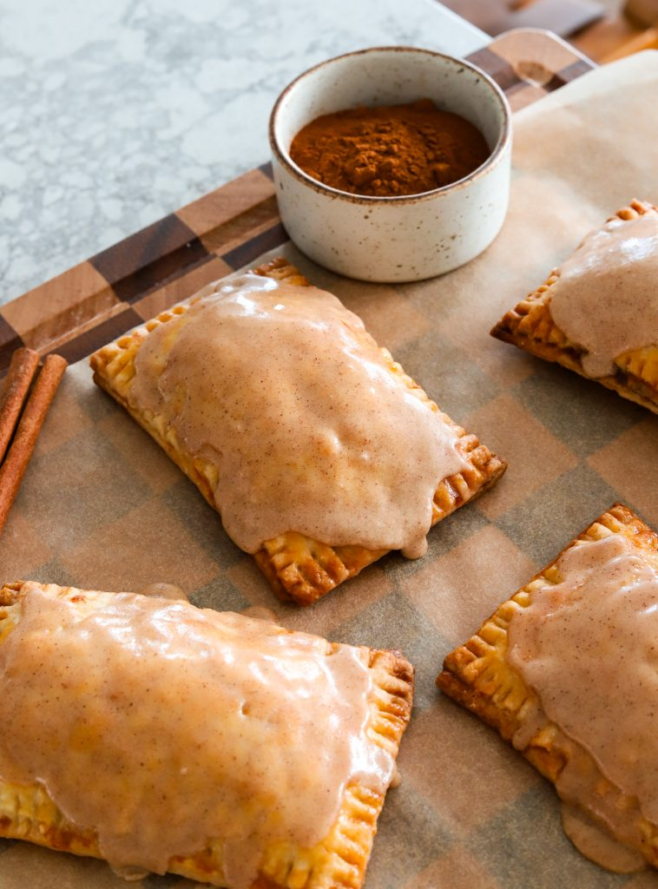

Pop-Tarts are one of those nostalgic treats that instantly take you back to childhood — that shiny foil wrapper, the sweet smell when you toasted them (or maybe you ate them straight up from the packet), and of course the gooey filling. But let’s be honest: the store-bought version is full of random ingredients and never tastes as good as you remember. This homemade copycat changes everything. With flaky, buttery pastry, a cozy brown sugar cinnamon filling, and a maple glaze that ties it all together, these Pop-Tarts taste like the childhood favorite but leveled up. They’re made from scratch, they’re fresher, and they’re so much more fun to bake (and eat).
Making the Dough
The base of these Pop-Tarts is a homemade pie crust, and it’s what makes them so good. Cold butter gets pulsed into flour, sugar, and salt until it looks like coarse crumbs, then a splash of ice water brings it together into dough. The key is not to overwork it — you want little bits of butter left in the dough so they melt in the oven and give you that flaky texture.
Once the dough comes together:
- Divide it into two equal sections.
- Chill for about an hour to firm up the butter.
- Roll each section into a neat rectangle, about 13 x 11 inches and 1/8 to 1/4 inch thick. The thinner the better!
- Trim the edges so you have clean lines.
- Cut each rectangle into 8 smaller ones (about 3 x 4.5 inches) so you’ll end up with 16 total pieces.
At this point, you basically have Pop-Tart “building blocks” ready to go.
Assembling the Pop-Tarts
This is the part where everything comes together and your kitchen starts to smell amazing.
- Lay out 8 rectangles on a parchment-lined baking sheet, leaving some space between them.
- Mix the filling: brown sugar, cinnamon, vanilla, flour, a touch of melted butter, and a pinch of salt. It should be thick, almost like a paste.
- Spoon on the filling — about 2 tablespoons each. Spread it flat but keep the edges clean.
- Brush edges with egg wash to act like glue.
- Top with another rectangle press the edges, and crimp with a fork all around for that classic Pop-Tart look.
- Vent the tops with a fork (so the steam escapes) and brush with more egg wash for shine.
- Chill the whole tray for 20 to 30 minutes to help them keep their shape in the oven.
- Bake at 350°F for about 20 minutes, until golden brown.
After baking, let the Pop-Tarts cool for 10 to 15 minutes before icing. That way the glaze doesn’t melt right off.
The Icing
The glaze is what makes these taste instantly familiar — but with a little upgrade. You’ll whisk together powdered sugar, maple syrup, cream, vanilla, and cinnamon until smooth. For even more flavor, you can use brown butter instead of regular melted butter:
- Melt butter in a light-colored pan over medium heat.
- Stir until it foams, then watch for it to turn golden brown and smell nutty.
- Pull it off the heat and let it cool slightly before adding to the glaze.
It’s optional, but it gives the icing such a rich, toasty flavor. Spread or drizzle it over the cooled Pop-Tarts, let it set, and you’re ready to dive in.
Making Other Flavors
Once you know the technique, you can turn these into any kind of Pop-Tart you want. The brown sugar cinnamon is classic, but don’t stop there:
- Fruit-filled → strawberry jam, raspberry preserves, or blueberry for that OG Pop-Tart feel.
- Chocolatey → Nutella, chocolate hazelnut spread, or even a layer of ganache.
- Nutty → peanut butter with a drizzle of chocolate on top.
- Seasonal → pumpkin pie filling in the fall, lemon curd in the spring, or apple butter for cozy vibes.
The crust stays the same, and you can always mix up the glaze to match the filling. That’s the fun part — once you nail the method, the flavor options are endless.
Tips for Success
- Keep everything cold → Cold butter and chilled dough are what give you that flaky pastry. Don’t skip the chill times.
- Chill before baking → Popping the assembled Pop-Tarts into the fridge for 20 minutes helps them hold their shape and keeps the filling from leaking.
- Don’t overfill → Two tablespoons of filling is plenty. More than that and it’ll ooze out the sides and puff up too much.
- Cool before icing → Let them rest at least 10–15 minutes so the glaze doesn’t slide off.
- Brown butter is optional → Regular melted butter works fine for the icing, but brown butter adds an amazing nutty flavor.
- No food processor? No problem. Use a pastry cutter, fork, or even your fingertips to work the butter into the flour until you see pea-sized crumbs. Then stir in the water with a spoon until the dough comes together.

Craving More Nostalgia? Try These Recipes Out!
- Totino's Pizza Rolls
- Spaghetti O’s
- Cosmic Brownies
- Strawberry Cheesecake Bars
- Bosco Cheese Bread Sticks
- Kudos Bars
If you tried this recipe and loved it, drop by down below and let me know how you liked it with a rating and comment! Feel free to also leave a question there about this recipe and I’ll get right back to it.
To see more recipes and behind the scenes, follow along on Instagram and Youtube! I’m also now on Pinterest pinning away so stop by and see what’s up.
DESSERT
Brown Sugar Cinnamon Pop-Tart Copycat
These homemade brown sugar cinnamon Pop-Tarts have the same nostalgic flavor you love but with buttery pastry, a gooey spiced filling, and a maple glaze. They’re fresher, cozier, and so much better than store-bought.
PRINT RECIPE PIN RECIPEIngredients
PIE CRUST
- 2 1/2 cups all-purpose flour, plus extra for rolling
- 1 cup cold unsalted butter, cubed (2 sticks)
- 3 tablespoons white sugar
- 1 teaspoon salt
- 1/3 cup ice cold water
BROWN SUGAR FILLING
- 2/3 cup brown sugar
- 1 1/2 tablespoons all-purpose flour
- 2 tablespoons melted butter
- 2 teaspoons cinnamon
- 1 teaspoon vanilla extract
- pinch of salt
EGG WASH
- 1 large egg
- 1 tablespoon heavy cream
ICING
- 2/3 cup powdered sugar
- 3 tablespoons maple syrup
- 2 tablespoons unsalted butter, browned
- 1 tablespoon heavy cream
- 1 teaspoon vanilla extract
- 3/4 teaspoon cinnamon
Instructions
MAKING THE DOUGH
- In a food processor, pulse flour, sugar, and salt to combine.
- Add cold cubed butter; pulse until the mixture is crumbly.
- Drizzle in the ice water and pulse just until the dough looks pebbly but holds when pressed.
- Divide dough into 2 equal sections, wrap each tightly in the shape of a disc, and chill for 1 hour.
- On a lightly floured surface, roll each section to 1/8–1/4 inch thick (the thinner the better) into around 13 x 11 inch rectangle; trim edges to make it even.
- Cut each rectangle into 8 smaller rectangular pieces (about 3 x 4.5 inches) for 16 total.
PREPARING THE FILLING
- In a bowl, mix together brown sugar, all-purpose flour, melted butter, cinnamon, vanilla, and a pinch of salt until evenly combined.
ASSEMBLY & BAKING
- Line a baking sheet with parchment. Arrange 8 dough rectangles spaced apart.
- Whisk powdered sugar, maple syrup, brown butter (or melted butter), cream, vanilla, and cinnamon until smooth. Set aside.
MAKING THE DOUGH
- In a food processor, pulse flour, sugar, and salt to combine.
- Add about 2 tablespoons of filling to each, spreading flat and leaving clean edges.
- Whisk egg and cream for the egg wash. Brush edges of each bottom rectangle.
- Top with another rectangle, press to seal, and crimp edges with a fork.
- Poke holes across the tops with a fork for steam vents. Brush tops with egg wash.
- Chill the assembled Pop-Tarts in the fridge for 20 to 30 minutes on the baking sheet. Meanwhile, preheat oven to 350°F.
- Bake 20 minutes until lightly golden.
- Transfer pop tarts to a cooling rack and let cool 10 to 15 minutes, then cover tops with icing. Allow to set before serving.
Tips & Notes
Q: Can I use store-bought pie dough instead of homemade?
A: Yes! Store-bought works in a pinch, though homemade dough gives you a flakier, richer pastry.
Q: What if I don’t have a food processor?
A: No problem — you can make the dough by hand. Use a pastry cutter, fork, or your fingertips to cut the butter into the flour until it looks like coarse crumbs, then mix in the ice water with a spoon until it comes together.
Q: Do I have to brown the butter for the icing?
A: Nope — it’s optional. Brown butter adds a nutty depth, but regular melted butter works just as well.
Q: Can I make these Pop-Tarts ahead of time?
A: Yes. You can assemble them a day in advance, cover, and refrigerate until ready to bake. They can also be baked and frozen — just reheat in the oven or toaster oven.
Q: Can I use different fillings?
A: Absolutely! Try strawberry jam, Nutella, apple cinnamon, or even peanut butter for a fun twist.
Q: How do I store leftovers?
A: Keep them in an airtight container at room temperature for 2 days, or refrigerate for up to 5 days. For longer storage, freeze for up to 2 months.